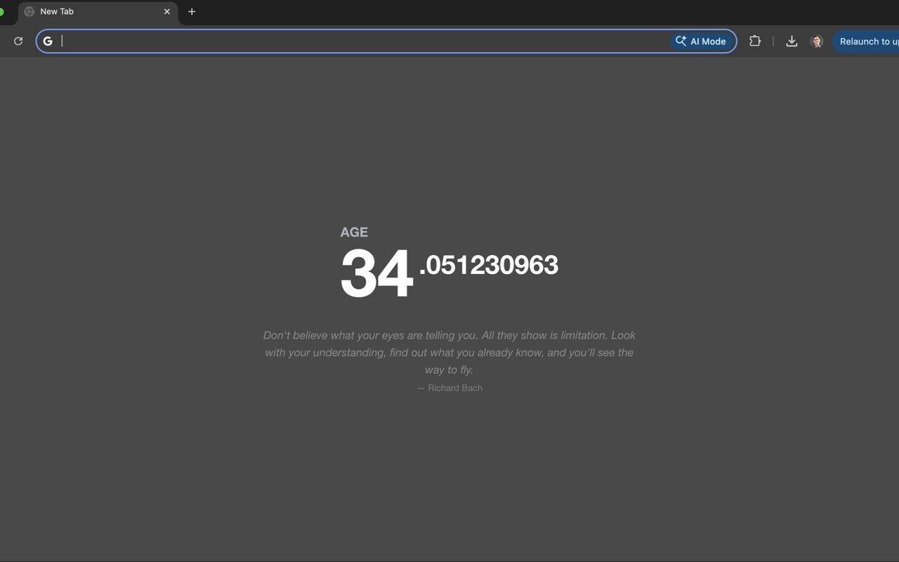

Replace your new tab with a real-time counter. Track your age, countdown to a date, or to the end of the year.

Watch your age tick up in real time, down to the millisecond.
Count down to the end of the year or to any date you choose.
A new motivational quote every day from a curated collection.
No tracking, no analytics. All data stays in your browser.